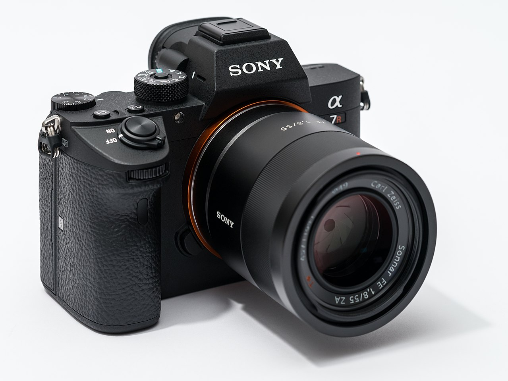
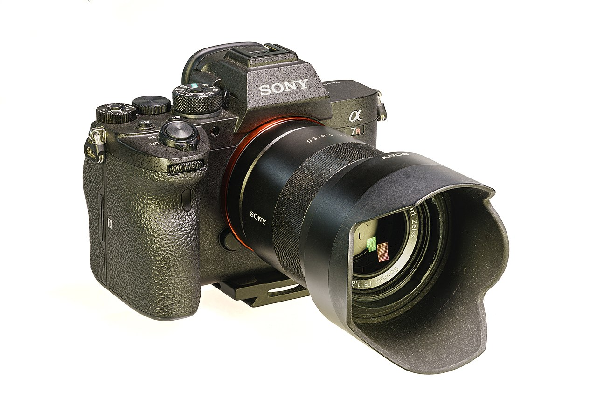
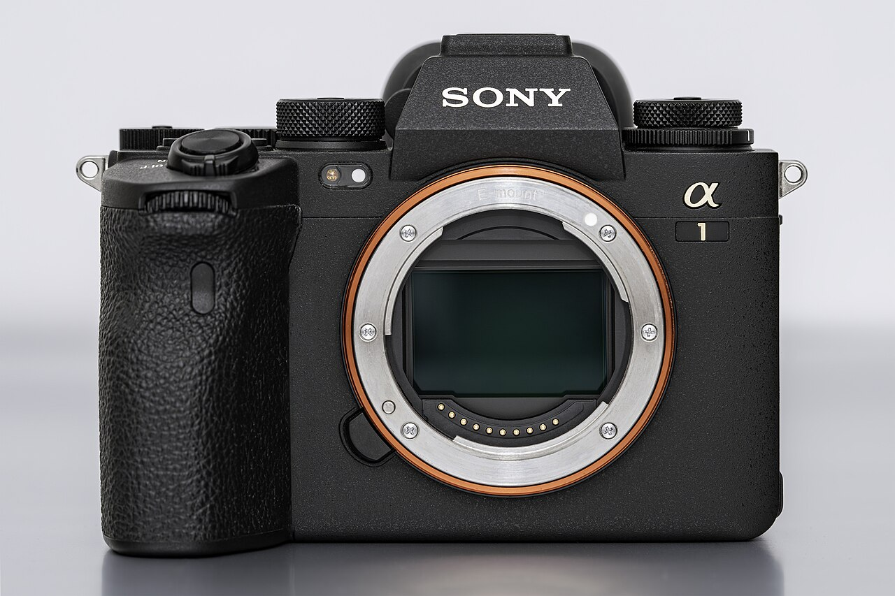
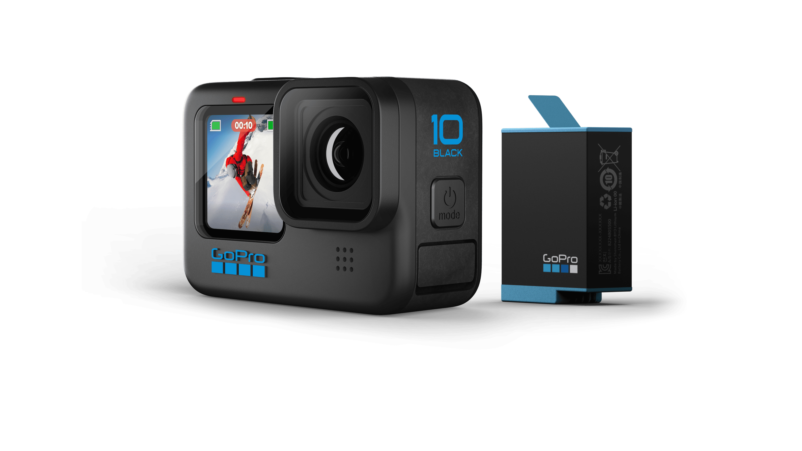

Rentals
Camera gear for shoots, events, and content days.
The rental side centers on Sony bodies, cine-style video gear, stabilization, and specialty lenses for different production needs.
Camera rentals and creative production
Ardi Rent & Service LLC is built for photography, video, podcasts, live streaming, and high-end audiovisual production. The business combines equipment rental, creative services, and lead generation into a scalable operation.
Rentals
The rental side centers on Sony bodies, cine-style video gear, stabilization, and specialty lenses for different production needs.
Services
The service side focuses on content creation, production coordination, and helping clients turn gear into finished media.
Services
The documents position Ardi Rent & Service LLC as a company that combines equipment, creative production, and client acquisition in one ecosystem.
Sony mirrorless bodies, a professional 4K XDCAM camcorder, action camera options, and stabilization gear for shoots of different sizes.
Flexible support for portraits, branding, events, and content capture with the right lenses and camera combinations for each project.
High-quality video coverage, production support, and project coordination for interviews, branded content, and social campaigns.
A setup designed for studio sessions, livestreams, and multi-format audio-visual content, including streaming-ready gear.
Equipment
These are the camera bodies and camera systems that should be featured first on the website.

Camera bodiesSony a7R III, a7R IV, a7S III, a7 IV, and Alpha 1.

High resolutionGreat for detail-heavy photography, branded content, and crisp commercial work.
 Video-first
Video-first
Built for cinematic shooting, low-light work, and hybrid photo/video workflows.
 Hybrid
Hybrid
A flexible all-rounder for clients who need one body that can do both.

FlagshipA top-tier body for premium production and demanding commercial shoots.

ActionPerfect for action footage, creative angles, and compact on-the-go capture.
 Compact
Compact
A small, stabilized camera for mobile work, behind-the-scenes, and quick content.
 Broadcast
Broadcast
The streaming and event camcorder used for live production and long-form coverage.
Production model
The pitch document makes it clear: the goal is not only to launch a beautiful website, but to build a commercial foundation that generates revenue, order, and scalability.
That means the site should help clients request equipment, ask about production support, and understand that Ardi can coordinate projects directly or through a network of photographers, videographers, and technicians.
Business vision
The strategy is to combine rentals, direct services, and client acquisition in one place. That is the real opportunity behind the brand.
Growth path
The pitch references Shopify as the base for reservations, deposits, and lead generation. This website can act as the public front door while the backend grows into a stronger sales system.
Contact
The next step is to finish the live pages with your real contact details, portfolio links, and the exact gear/services you want to prioritize on the homepage.